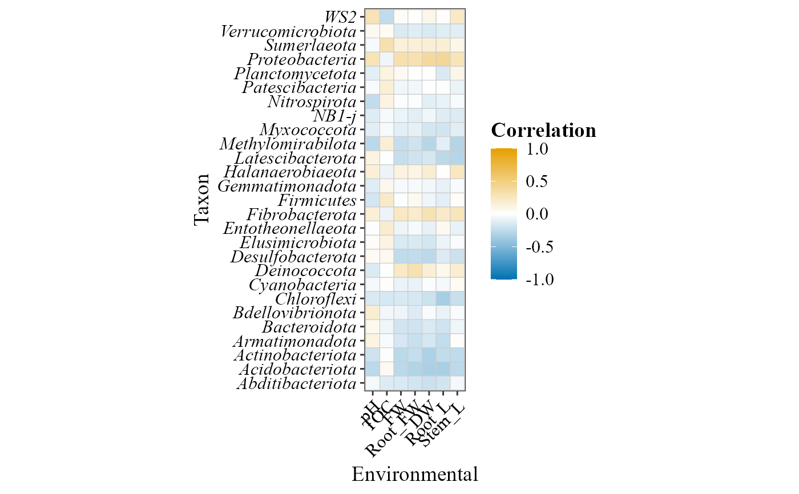

Correlation between environmental variables and taxa
Source:R/corr_env_abund_plot.R
corr_env_abund_plot.RdComputes the relative abundance of the taxa at a taxonomic level, correlates it with environmental variables, and shows the correlations as a heatmap (tile) or a bubble plot (circle).
Usage
corr_env_abund_plot(
table,
env_data = NULL,
metadata = NULL,
env_vars = NULL,
method = "spearman",
hc.order = TRUE,
geom = c("tile", "circle"),
show_labels = TRUE,
col_palette = NULL,
diverging_palette = "BuOr",
invert_axes = TRUE,
taxonomy_db = "silva",
level = "genus",
pval_threshold = NULL,
p_adjust_method = "BH",
x_label_angle = 45,
save_table = FALSE,
table_filename = "corr.txt"
)Arguments
- table
A data frame with taxa in rows and samples in columns. The last column must be named
taxonomy, containing full taxonomic strings.- env_data
Optional data frame of environmental variables, with row names matching the sample names in
table. DefaultNULL: the variables named inenv_varsare taken frommetadata. Use it only when the variables are in a separate table.- metadata
A data frame containing sample metadata. Its first column must hold the sample IDs (the column names of
table). The environmental variables can be columns ofmetadata(seeenv_vars).- env_vars
Character vector of environmental variables to include in the correlation analysis (columns of
metadata, or ofenv_dataif given). Required whenenv_dataisNULL; with a separateenv_data,NULLuses all its variables.- method
Character. Correlation method:
"spearman"(default),"pearson"or"kendall".- hc.order
Logical. If
TRUE(default), taxa and variables are reordered by hierarchical clustering.- geom
Character. Type of visualization to generate:
"tile"(heatmap, default) or"circle"(bubble plot). Case-insensitive.- show_labels
Logical. If
TRUE(default), the correlation values are shown.- col_palette
Optional character vector of colors for the correlation scale. If
NULL(default),diverging_paletteis used.- diverging_palette
Character. Colorblind-friendly diverging palette, used when
col_paletteisNULL:"BuOr"(blue-orange, default),"BuVm"(blue-vermillion),"BuPk"(blue-pink),"GnPk"(green-pink) or"PuYl"(purple-yellow); or"viridis", a sequential scale without a neutral midpoint (not recommended for correlations).- invert_axes
Logical. If
TRUE(default), taxa and variables swap axes.- taxonomy_db
Character. Database the taxonomy strings come from:
"silva"(default),"gg2"(Greengenes2, also"gg"),"unite"or"Kraken2"(also"kraken"). Case-insensitive.- level
Character. Taxonomic level:
"kingdom","phylum","class","order","family","genus"(default) or"species". Case-insensitive.- pval_threshold
Numeric or
NULL. P-value cutoff (afterp_adjust_method) to keep only taxa with a significant correlation with at least one variable. DefaultNULL(no filtering).- p_adjust_method
Character. Multiple-testing correction for the p-values of all taxon x variable correlations, any method of
stats::p.adjust(). Default"BH";"none"uses the raw p-values.- x_label_angle
Numeric. Rotation (degrees) of the x-axis labels. Default
45;0for horizontal labels.- save_table
Logical. If
TRUE, saves the plotted correlations (one row per taxon and variable, with the raw and adjusted p-values) as a tab-delimited file. DefaultFALSE.- table_filename
Character. Name or path of the saved file (used when
save_table = TRUE). Default"corr.txt".
Examples
table_path <- system.file("extdata", "tabla_bacteria.txt", package = "MicroBioMeta")
table <- read.delim(table_path, row.names = 1, check.names = FALSE)
metadata_path <- system.file("extdata", "metadata_bacteria.txt", package = "MicroBioMeta")
metadata <- read.delim(metadata_path, check.names = FALSE)
corr_env_abund_plot(
table = table,
metadata = metadata,
env_vars = c("pH", "TOC", "FW", "Root_FW", "DW", "Root_L", "Stem_L"),
method = "pearson",
geom = "tile",
hc.order = FALSE,
invert_axes = TRUE,
show_labels = FALSE,
level = "phylum",
taxonomy_db = "silva"
)
